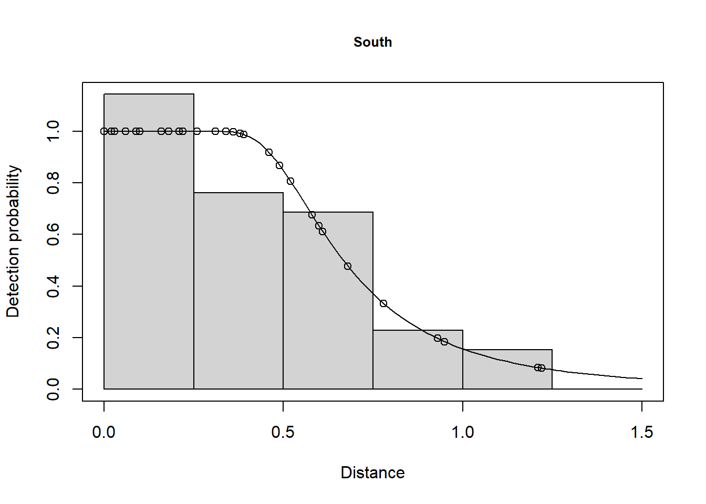
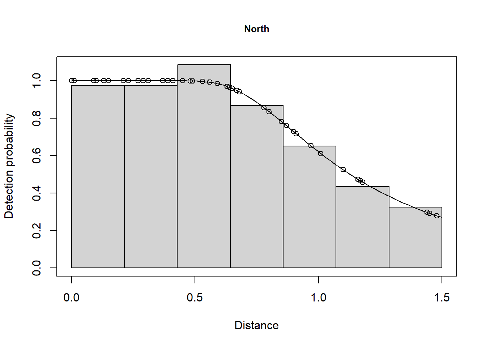
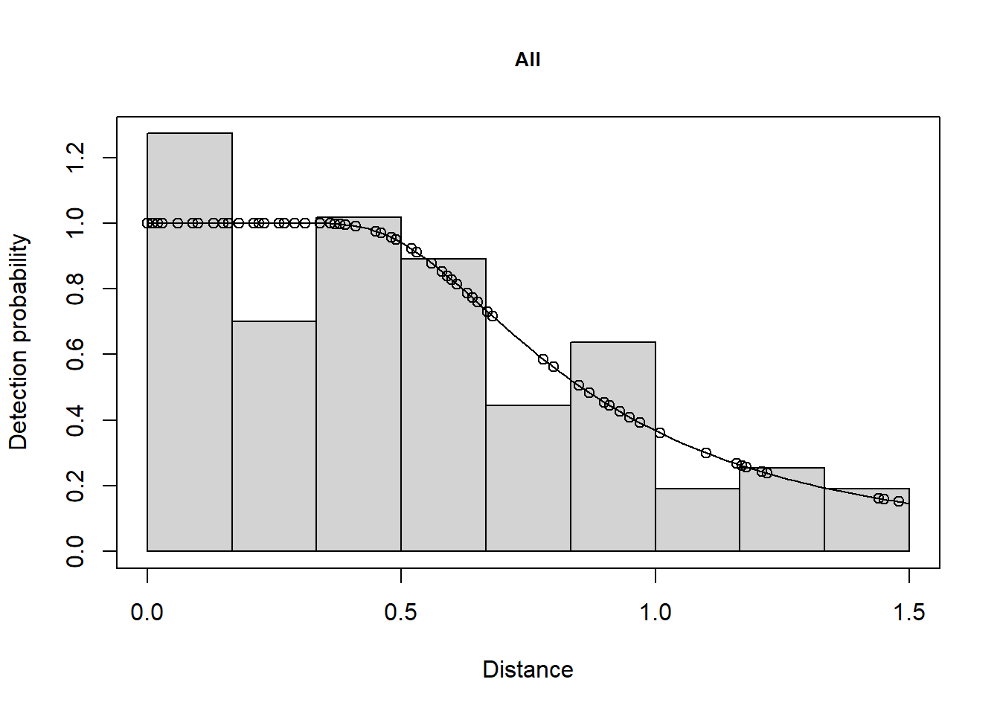

Region.Label Area Sample.Label Effort distance
1 South 84734 1 86.75 0.10
2 South 84734 1 86.75 0.22
3 South 84734 1 86.75 0.16
# Specify truncation distanceminke.trunc <-1.5
Strata treated distinctly
Fit detection function and encounter rate separately in each strata.
## Fit to each region separately - full geographical stratification# Create data set for Southminke.S <- minke[minke$Region.Label=="South", ]minke.df.S.strat <-ds(minke.S, truncation=minke.trunc, key="hr", adjustment=NULL)summary(minke.df.S.strat)
Summary for distance analysis
Number of observations : 39
Distance range : 0 - 1.5
Model : Hazard-rate key function
AIC : 8.617404
Detection function parameters
Scale coefficient(s):
estimate se
(Intercept) -0.5102606 0.1921723
Shape coefficient(s):
estimate se
(Intercept) 1.242147 0.3770239
Estimate SE CV
Average p 0.4956459 0.0662961 0.133757
N in covered region 78.6852058 13.8143714 0.175565
Summary statistics:
Region Area CoveredArea Effort n k ER se.ER cv.ER
1 South 84734 1453.23 484.41 39 13 0.08051031 0.01809954 0.2248102
Abundance:
Label Estimate se cv lcl ucl df
1 Total 4587.926 1200.166 0.2615924 2687.497 7832.219 21.14052
Density:
Label Estimate se cv lcl ucl df
1 Total 0.05414505 0.01416393 0.2615924 0.03171687 0.09243301 21.14052
# Combine selection and detection function fitting for Northminke.df.N.strat <-ds(minke[minke$Region.Label=="North", ],truncation=minke.trunc, key="hr", adjustment=NULL)summary(minke.df.N.strat)
Summary for distance analysis
Number of observations : 49
Distance range : 0 - 1.5
Model : Hazard-rate key function
AIC : 37.27825
Detection function parameters
Scale coefficient(s):
estimate se
(Intercept) -0.01081041 0.2203526
Shape coefficient(s):
estimate se
(Intercept) 1.022021 0.6907906
Estimate SE CV
Average p 0.7592309 0.09987673 0.1315499
N in covered region 64.5389973 9.62021402 0.1490605
Summary statistics:
Region Area CoveredArea Effort n k ER se.ER cv.ER
1 North 630582 4075.14 1358.38 49 12 0.03607238 0.01317937 0.3653591
Abundance:
Label Estimate se cv lcl ucl df
1 Total 9986.683 3878.031 0.3883203 4469.865 22312.49 13.98197
Density:
Label Estimate se cv lcl ucl df
1 Total 0.01583725 0.006149924 0.3883203 0.007088475 0.03538397 13.98197
The AIC value for the detection function in the South was 8.617 and the AIC for the North was 37.28. This gives a total AIC of 45.9. The AIC value for the pooled detection function was 48.64. Because 48.64 is greater than 45.9, estimation of separate detection functions in each stratum is preferable.



Differing abundance estimates from stratification decision
In the full geographical stratification, both encounter rate and detection function were estimated separately for each region (or strata). This resulted in the following abundances:
Abundance estimates using full geographical stratification.
Label
Estimate
North
9987
South
4588
Total
14575
Next, the distances were combined to fit a pooled detection function but encounter rate was obtained for each region. This resulted in the following abundances:
Abundance estimates calculating encounter rate by strata and a pooled detection function.
Label
Estimate
North
12181
South
3653
Total
15835
Another approach to stratification (advanced)
An equivalent result for full geographic stratification could be produced using the dht2 function, which does not require the disaggregation of the data set into two data sets.
# Geographical stratification with stratum-specific detection function strat.specific.detfn <-ds(data=minke, truncation=minke.trunc, key="hr", adjustment=NULL, formula=~Region.Label)abund.by.strata <-dht2(ddf=strat.specific.detfn, flatfile=minke, strat_formula=~Region.Label, stratification="geographical")print(abund.by.strata, report="abundance")
Abundance estimates from distance sampling
Stratification : geographical
Variance : R2, n/L
Multipliers : none
Sample fraction : 1
Summary statistics:
Region.Label Area CoveredArea Effort n k ER se.ER cv.ER
North 630582 4075.14 1358.38 49 12 0.036 0.013 0.365
South 84734 1453.23 484.41 39 13 0.081 0.018 0.225
Total 715316 5528.37 1842.79 88 25 0.048 0.011 0.237
Abundance estimates:
Region.Label Estimate se cv LCI UCI df
North 9865 3761.296 0.381 4451 21860 13.035
South 4651 1224.818 0.263 2719 7955 22.163
Total 14515 3970.578 0.274 8215 25648 16.065
Component percentages of variance:
Region.Label Detection ER
North 6.33 93.67
South 15.14 84.86
Total 13.88 86.12
I won’t say anything just now about the wrinkle I introduced with the formula argument in the call to ds(). Recognise there is an alternative (easier) way to perform the full geographic stratification analysis without tearing apart the data. The abundance estimates presented in the last output do not identically match the estimates shown earlier for full geographic stratification, but they are close. The added benefit of this latter analysis is that the uncertainty in the total population size is computed within dht2 rather than needing to be calculated manually using the delta method.
An aside
If geographic stratification were ignored, the abundance estimate of would be 18,293 minkes. This estimate is substantially larger than the estimates above. The reason is that the survey design was geographically stratified with a smaller proportion of the north stratum receiving sampling effort and a greater proportion of the southern stratum receiving survey effort. Ignoring this inequity in the unstratified analysis would lead us to believe that the more heavily sampled southern stratum is indicative of whale density throughout the study area.